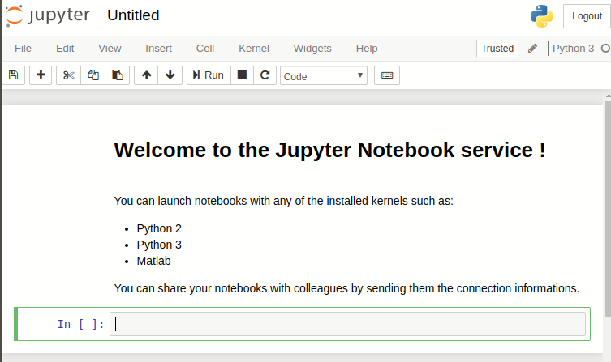

We provide a set of web infrastructure tools to:
- convert file within formats of use for X-ray/neutron scattering
- compute phonon dispersions in 4D [S(q,w)]
in single crystals
- use cloud services (virtual machines)
Converters |
INPUT (what you provide) | OUTPUT (what you get) |
| F²(hkl) cif2hkl |
A CIF/ShelX/FullProf file | A file with the F²(HKL) reflection list for use with e.g. McStas and McXtrace (Laz/Lau) |
| idl2matlab |
An IDL code (file *.pro) | The corresponding Matlab/Scilab code. |
|
|
any text file, with numbers and comments mixed | A data file containing the numerical data in a scientific file format (Matlab, HDF, XML, Scilab, IDL, YAML, HTML and Octave) |
|
|
||
Cloud |
INPUT (what you provide) | OUTPUT (what you get) |
 Virtual
Machines Virtual
Machines |
A predefined virtual machine and email |
A browser showing the distant machine screen |
| Jupyter Notebooks |
Your email |
Jupyter Notebooks (Python...) |
Computations |
INPUT (what you provide) | OUTPUT (what you get) |
 Phonons |
A POSCAR, CIF, PDB, ... | Phonon dispersions from the Dynamical matrix, using forces estimated by ab-initio using ASE and a selection of DFT codes (EMT, GPAW, ABINIT, Elk, QuantumEspresso, VASP). Provides a sqw_phonon Model, that can further be evaluated. |